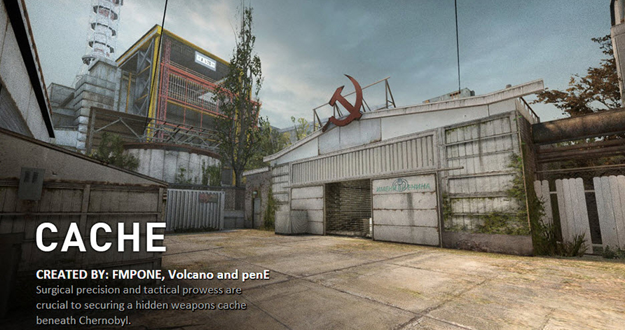
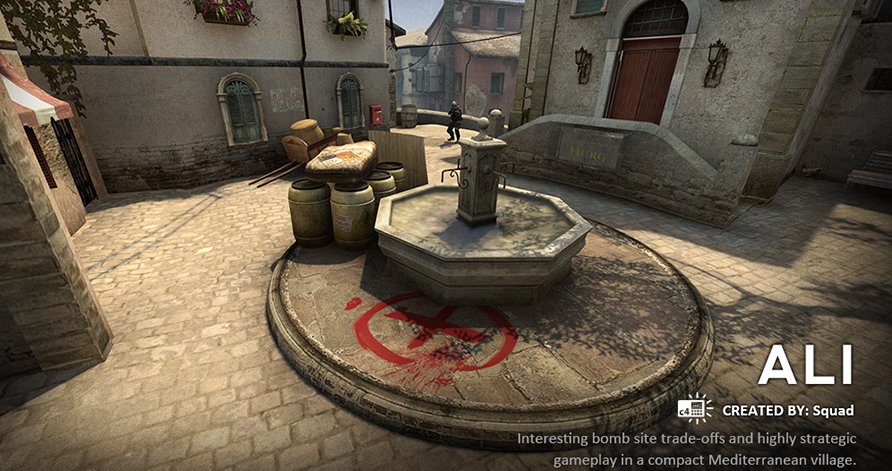

Bomb defusal maps in opperation Phoenix
Cache
Cache (de_cache) is a custom Bomb Defusal map featured in Operation Bravo and in Operation Phoenix, available in Counter-Strike: Global Offensive. Originally a custom map for Counter-Strike: Source, it was remade for Counter-Strike: Global Offensive with rebalances to fix the original's Terrorist-sided issues. The map takes place in Pripyat, Ukraine. The Chernobyl Power Plant is visible from the Terrorist spawn, along with nearby buildings and even fencing material consistent with the real-life counterpart.
Favela

Favela is a custom bomb defusal map featured in Counter-Strike: Global Offensive's Operation Payback and Operation Phoenix. The map takes place inside of an impoverished Brazilian favela. Favela was created by "Rick" and uploaded to the Maps Workshop on January 28, 2013. It, along with six other maps, were released as a part of Valve's Operation Payback. Only minor gameplay tweaks have been made since its initial release. On the October 13, 2016 Update, the map was removed from the game files, making Favela inaccessible via console.
Ali
Ali (de_ali) is a custom bomb defusal map featured in Operation Bravo and Operation Phoenix from Counter-Strike: Global Offensive developed by Squad. On the October 13, 2016 Update, the map was removed from the game files, making Coast inaccessible via console.
Seaside
Seaside (de_seaside) is a custom bomb defusal map featured in Counter-Strike: Global Offensive's Operation Payback, Operation Bravo and Operation Phoenix. The conflict of Seaside is taking place in a dock, somewhere in the Caribbean. On the October 13, 2016 Update, the map was removed from the game files, making Seaside inaccessible via console. The map was added back to Counter-Strike: Global Offensive on the July 31, 2019 update as part of Competitive in Scrimmage mode, but on the November 18, 2019 update it was removed from the game files yet again.